Adventures
Beneath the canopy, light and shadow dance.
Every path leads deeper into wonder.
Dongyanshan 東眼山國家森林遊樂區
April 2025
Among cryptomeria and broadleaf trees,
ferns carpet the moist earth,
every step traces the layers of time,
where ancient lives once left their marks.
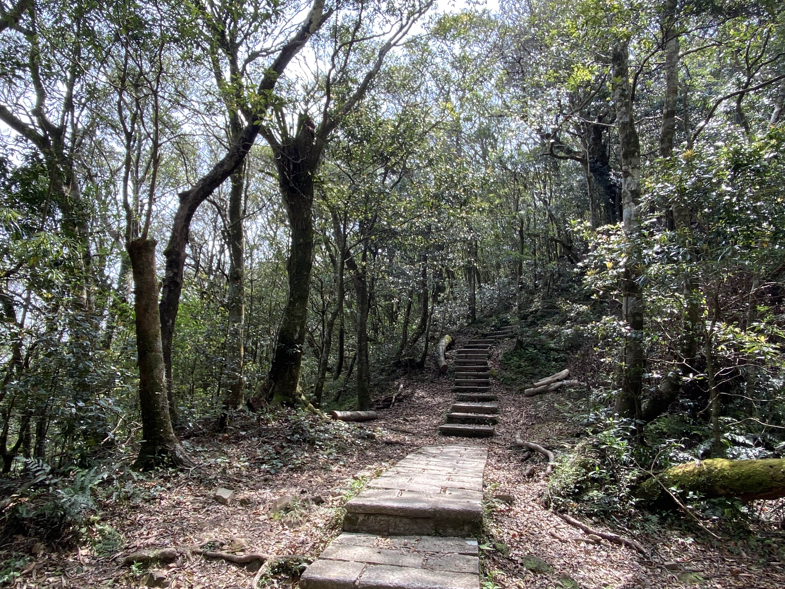
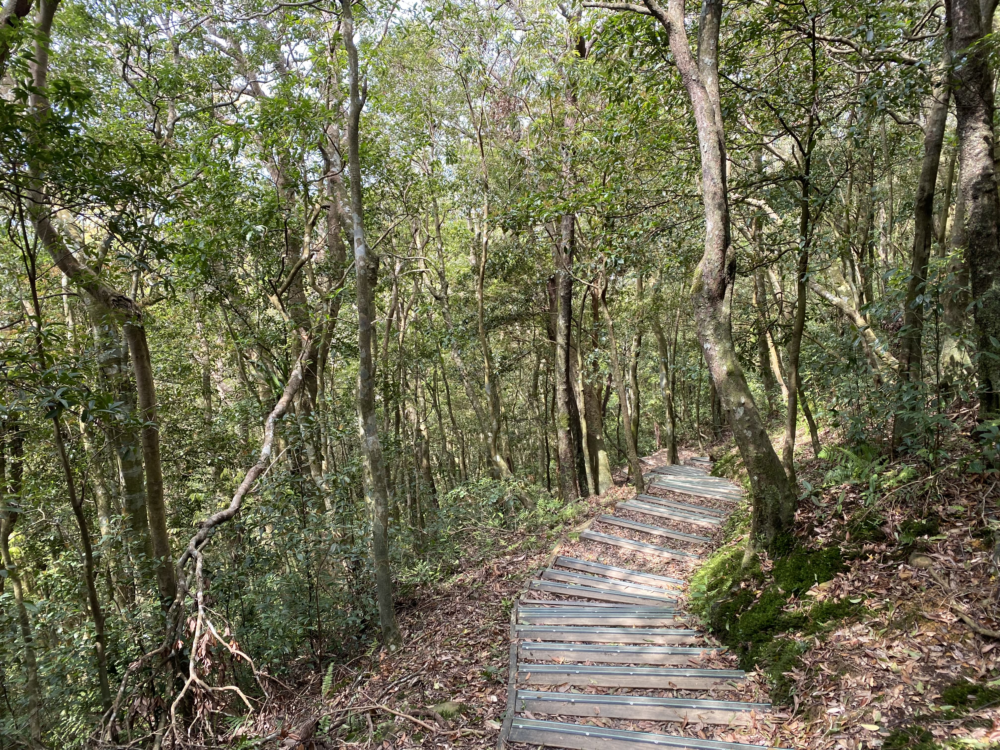
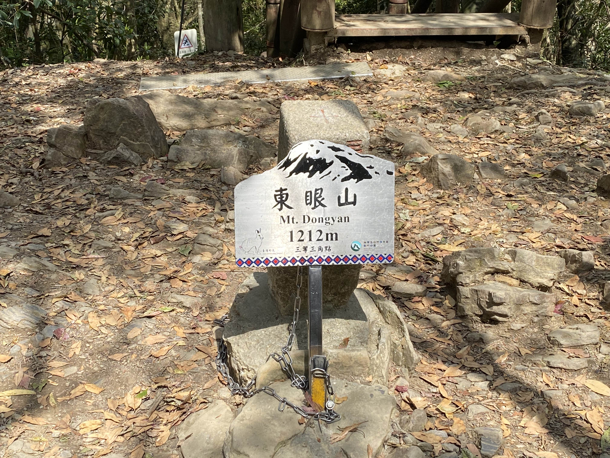
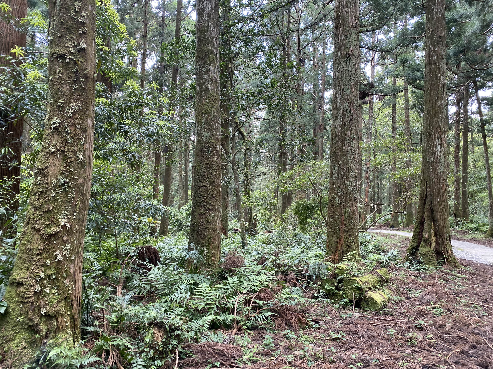
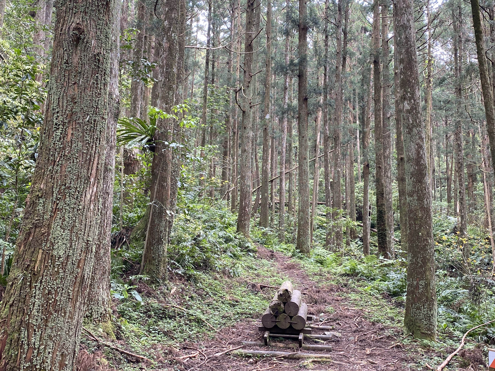
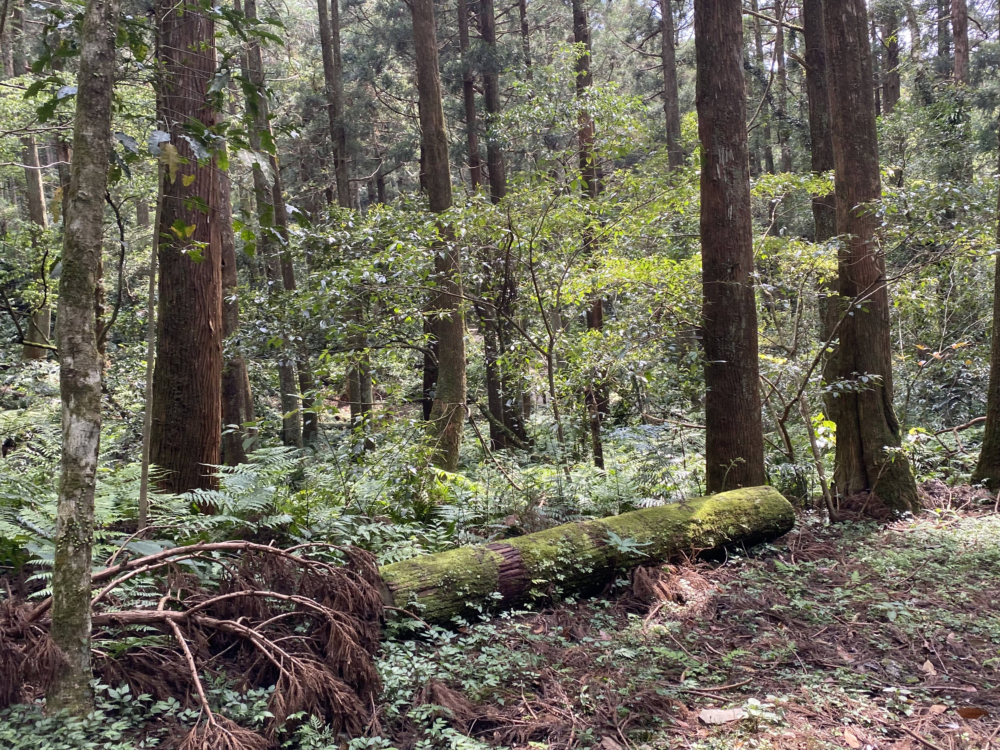
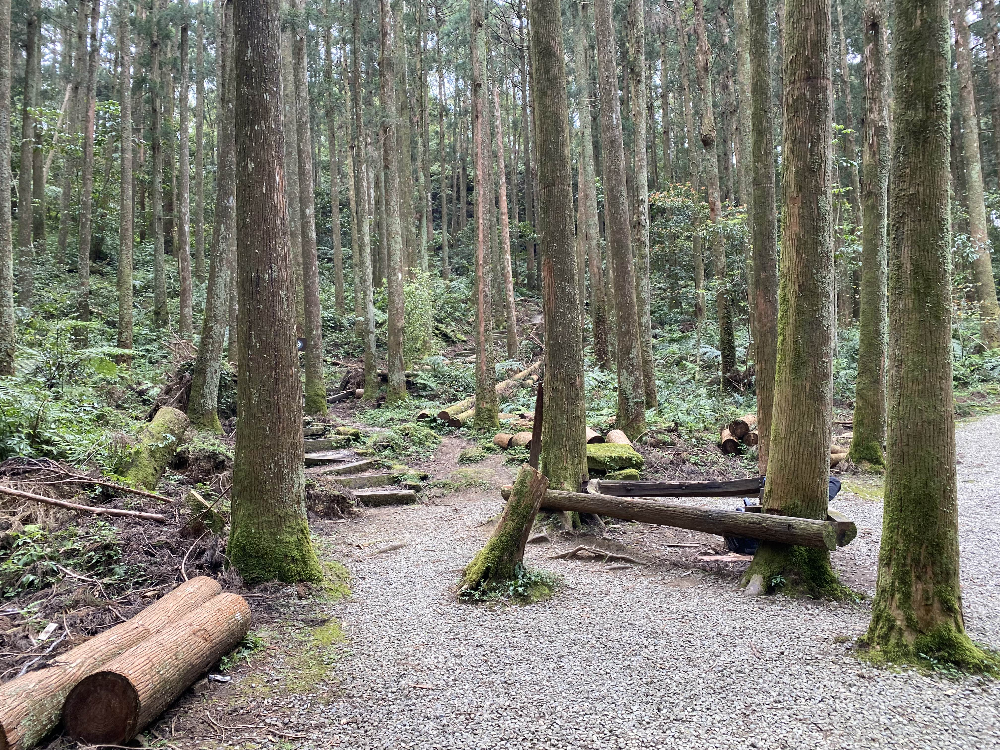
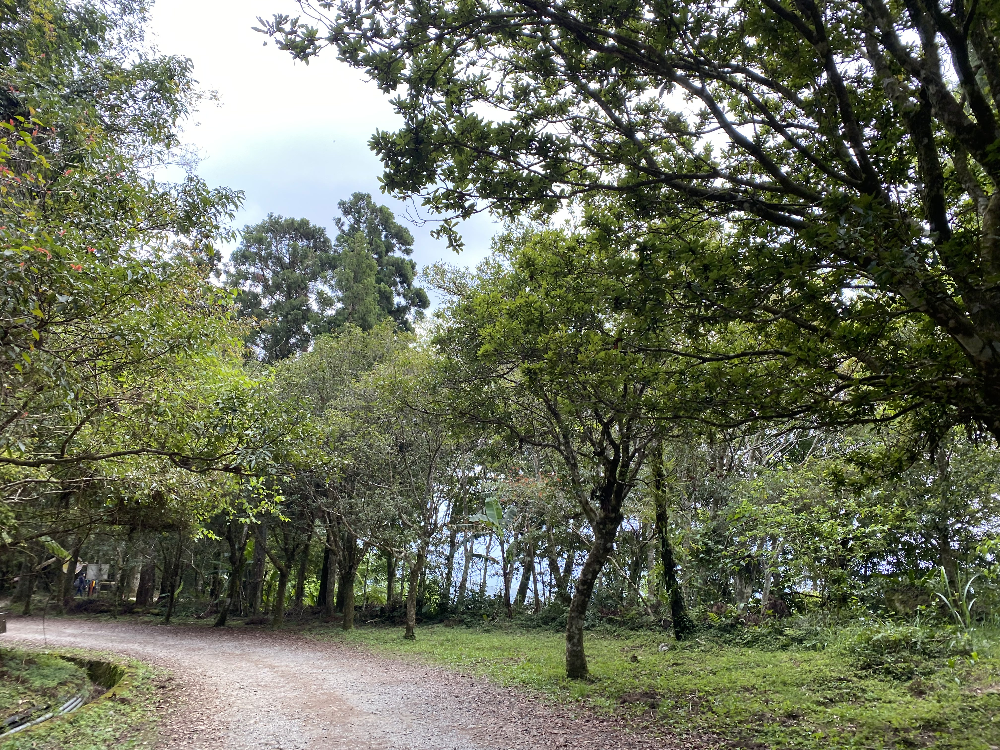
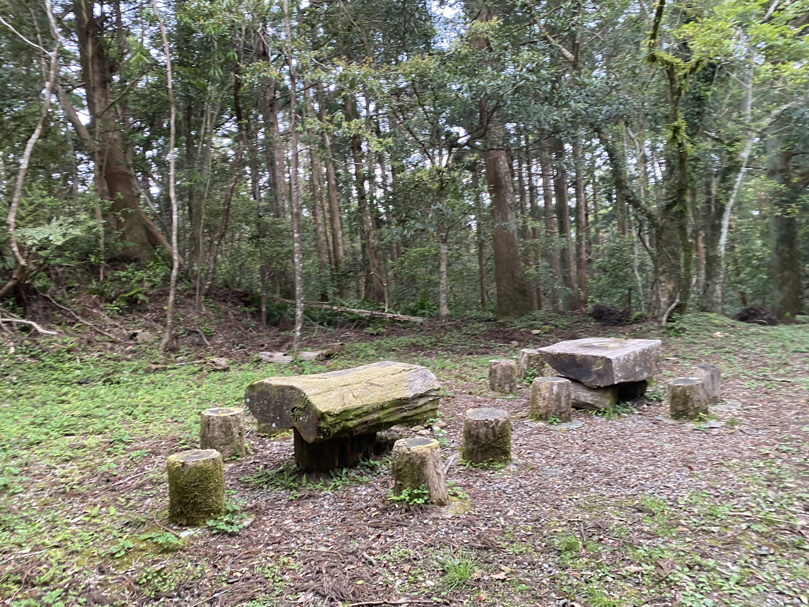
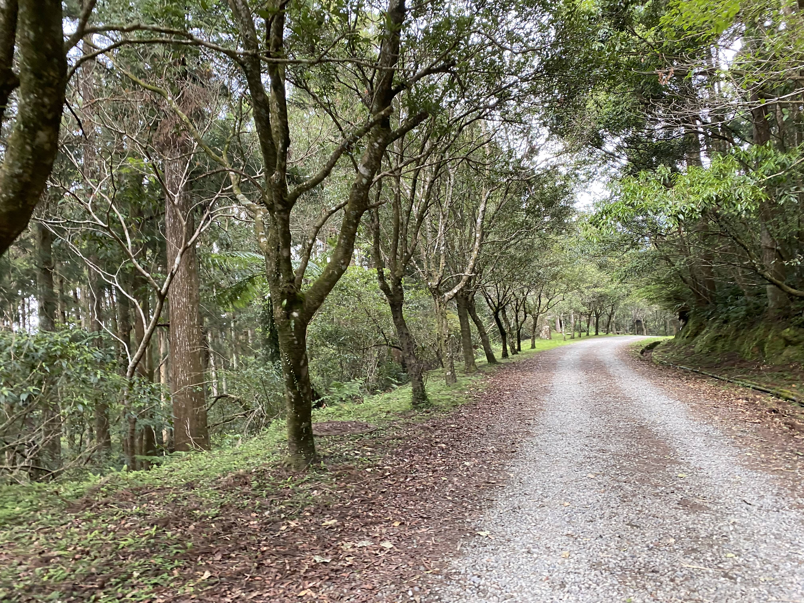
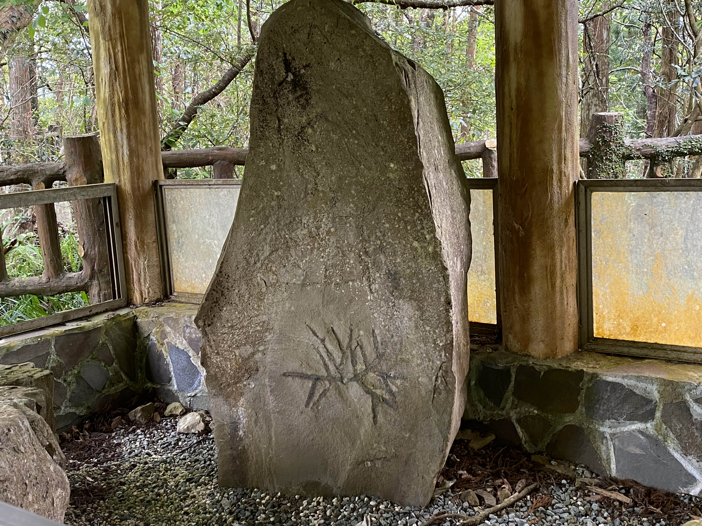
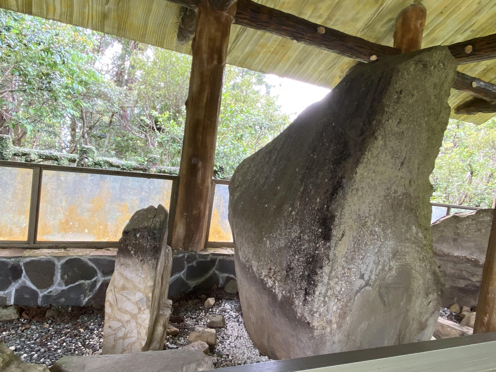
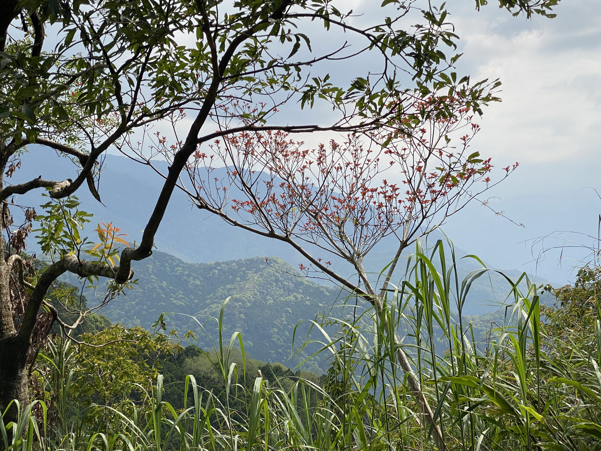